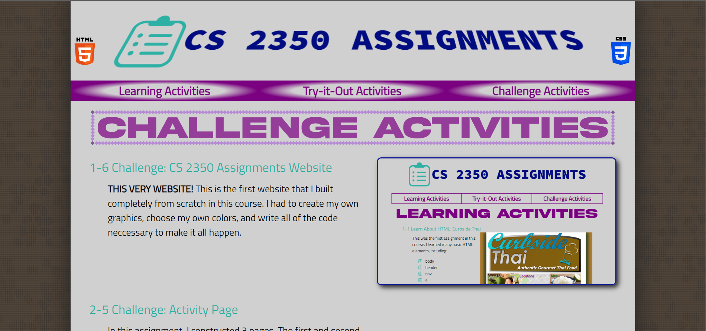
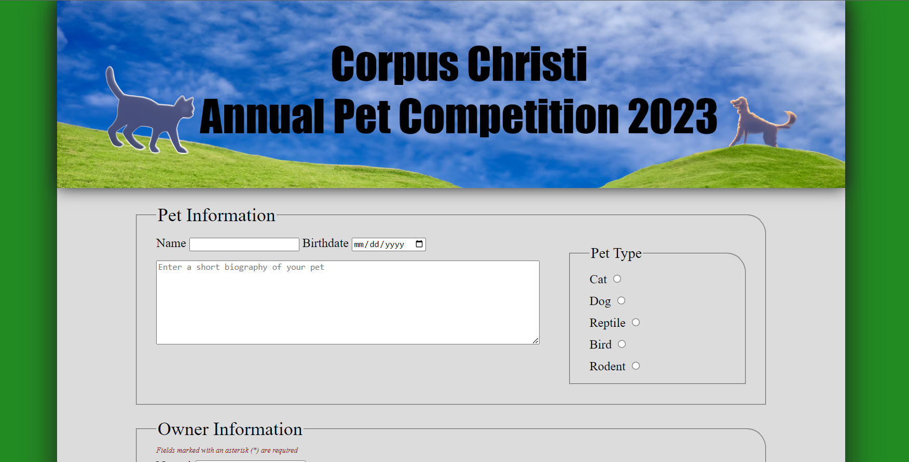
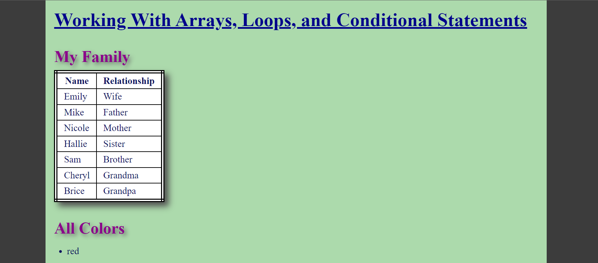

- 1-6 Challenge: CS 2350 Assignments Website

- THIS VERY WEBSITE! This is the first website that I built completely from scratch in this course. I had to create my own graphics, choose my own colors, and write all of the code neccessary to make it all happen.
- 2-5 Challenge: Activity Page
-
In this assignment, I constructed 3 pages. The first and second pages contain the story of Alan Turing, formatted and laid out in different ways. The third page contains my daily schedule for the fall. At first, it was tricky to figure out a topic for my page, but once I got the topic and content put together, everything else was pretty simple. Putting my schedule together wasn't too hard, but I did realize how busy I am with homework and taking care of my place.
- 3-3 Challenge: Graphic Design
- This assignment had me add graphic design to this website. I added many graphic design elements to nearly all parts of this site. Advanced background, border, text, color, and layout styles were added, along with more image styles and filters. I like that I get to pick all the specifics for the style and content of the website
- 3-6 Challenge: Pet Competition Web Form
- In this assignment, I built the Pet Competition website and the web form it contains. I used all the skills we learned over the course of the module: inputs of many types, labels, selection list, fieldsets, legends, buttons, and text areas. This one was pretty fun to do, I used Photoshop Generative Fill to create the header for the website.
- 5-5 Challenge: Arrays, Loops, and Conditions
- In this challenge assignment, I used JavaScript to manipulate the HTML code of the website. The actual HTML file is pretty empty, most of the content was added using JS. I used various things learned througout the unit. This was a pretty cool and fun one to create.